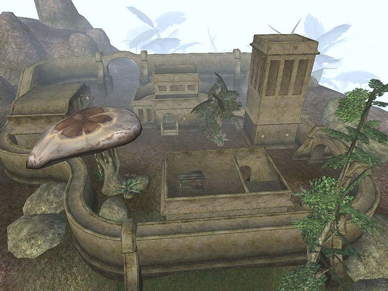

| Rethan Manor |
| Alignment: Hlaalu |
| Region: Bitter Coast |
|
Transport:
Almsivi Intervention:
Divine Intervention:
|
Services:
|
|  Rethan Manor, the Hlaalu stronghold after completion |
Rethan Manor is a Hlaalu stronghold located on the Odai Plateau, southwest of Balmora and east of Hla Oad. Players who advance to the House Hlaalu rank of Kinsman will be able to construct it by undertaking the related questline. For a full comparison of its storage, services and features to the other strongholds available, see the article on housing in Morrowind. Notably, it is the only Great House stronghold to feature a large number of NPC-owned containers that will flag the player's belongings as stolen if used. The manor itself is free of such issues, however.
The compound consists of a stone wall encircling a central manor and three support buildings inhabited by NPCs. There are four trainers and three merchants located here.
Travel and other services are available at the nearby settlements of Balmora and Hla Oad. Balmora can be reached either by Almsivi or Divine Intervention, the latter via Moonmoth Legion Fort. From Balmora, Silt Strider service connects to Ald'ruhn, Seyda Neen, Suran and Vivec, while Balmora's Mages Guild provides Guild Guide service to other Mages Guilds throughout Vvardenfell. Boats chartered from Hla Oad call at Ebonheart, Gnaar Mok, Molag Mar and Vivec. The ancient Dunmer stronghold of Hlormaren lies northwest of Balmora, providing access to Vvardenfell's network of Propylon Chambers.